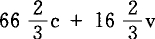

Ⅺ.固定资本的补偿
在阐述年再生产的各种交换时，遇到如下的巨大困难。如果我们以问题的最简单的表现形式来说明，就会得到：
（Ⅰ）4000c＋1000v＋1000m＋
（Ⅱ）2000c＋500v＋500m＝9000，
最后分解为：
4000Ⅰc＋2000Ⅱc＋1000Ⅰv＋500Ⅱv＋1000Ⅰm＋500Ⅱm＝6000c＋1500v＋1500m＝9000。不变资本的价值部分，只要是由真正的劳动资料（生产资料的一个特殊种类）构成的，就由劳动资料转移到劳动产品（商品）中去；这些劳动资料继续作为生产资本的要素执行职能，而且是以它们的旧的实物形式继续执行职能。只是劳动资料的损耗，即它们在一定期间持续执行职能时逐渐损失的价值，才作为借助于劳动资料生产出来的商品的价值要素再现，才由劳动工具转移到劳动产品中去。因此，就年再生产来说，在这里我们从一开始要考察的只是固定资本中那些寿命在一年以上的组成部分。如果它们在一年之内就不能使用了，它们就要全部由年再生产来补偿和更新；因而这里研究的问题从一开始也就和它们无关了。至于机器以及其他具有比较耐久形式的固定资本，则会发生而且会经常发生这样的情况：尽管整个建筑物或机器的躯体寿命很长，但是，其中有一些部分却必须在这一年内全部进行补偿。这些部分，与那些必须在一年内补偿的固定资本要素属于同一个范畴。
商品的这个价值要素绝不能和各种修理费用混为一谈。如果商品出售了，这个价值要素就会和别的要素一样货币化，即转化为货币；但是，在转化为货币以后，它和其他价值要素的区别就出现了。为了开始商品的再生产（总之，就是为了使商品生产过程成为持续的过程），在商品生产上消费的原料和辅助材料，必须用实物来补偿；在商品上消耗的劳动力，同样也必须用新的劳动力来补偿。因此，通过出售商品得到的货币，必须不断再转化为生产资本的这些要素，不断由货币形式转化为商品形式。即使比如说在一定期限内购买较大数量的原料和辅助材料，形成了生产储备，以致在一定期间不需要重新购买这些生产资料，因而，在这种储备用完以前，出售商品所得到的、用于上述目的的货币可以积累起来，这部分不变资本会暂时成为已经停止执行能动职能的货币资本，那这种情况也不会使问题发生任何变化。这不是收入资本；这是停留在货币形式上的生产资本。生产资料必须不断更新，虽然这种更新的形式，就流通来说，可以是各种各样的。重新购买，即生产资料借以更新、补偿的流通行为，可以在间隔较长的时期进行，这时是一次投入大量货币，而且由相应的生产储备来补偿；或者这种流通行为可以在依次间隔较短的时期进行，这时是迅速地连续地支出少量货币，而生产储备也较少。这一切都不会使事情本身发生任何变化。劳动力也是这样。凡是生产在一年内以相同规模连续进行的地方，已经消耗的劳动力就要不断由新的劳动力补偿；凡是劳动带有季节性或在不同期间需要不同劳动量的地方，例如在农业中，那就要相应地有时购买大量劳动力，有时购买少量劳动力。相反地，出售商品所得到的货币，就它是与固定资本损耗相等的那部分商品价值的货币化而言，是不会再转化为生产资本的组成部分的，虽然它是补偿这种生产资本的价值损失的。它在生产资本旁边沉淀下来，保留它的货币形式。这种货币沉淀反复发生，直到年数不等的再生产时期结束为止，在这个再生产时期，不变资本的固定要素以它的旧的实物形式在生产过程中继续执行职能。一旦这种固定要素如建筑物、机器等等的寿命已经完结，不能再在生产过程中执行职能，它的价值就在它旁边存在着，全部由货币来补偿，即由货币沉淀的总和，由固定资本逐渐转移到它参与生产的商品中去的、已经通过商品出售而转化为货币形式的价值的总和来补偿。接着，这些货币就用来对固定资本（或固定资本的要素，因为固定资本的不同要素有不同的寿命）进行实物补偿，从而对生产资本的这个组成部分进行实际更新。可见，这些货币是不变资本价值的一部分即固定部分的货币形式。因此，这种货币贮藏本身是资本主义再生产过程的一个要素，是在固定资本的寿命还没有完结，从而还没有把它的全部价值转移到所生产的商品中去，还不必用实物进行补偿之前，固定资本价值或它的个别要素的价值在货币形式上的再生产和贮存。只有在这种货币再转化为固定资本的新的要素，以便补偿它的寿命已经完结的要素的时候，它才失去货币贮藏的形式，从而再能动地进入以流通为中介的资本再生产过程。
就像简单的商品流通决不只是产品交换一样，年商品产品的交换也决不能只分解为它的不同组成部分的直接的互相交换。货币在其中起一种独特的作用，这种作用尤其会在固定资本价值再生产的方式上表现出来。（假如生产是共同的生产，不具有商品生产的形式，情况又会有哪些不同，这是以后要研究的问题。）
现在，我们再回到基本公式。第Ⅱ部类是：2000c＋500v＋500m。在这里，一年内所生产的全部消费资料等于价值3000；在构成这个商品总额的不同商品要素中，就价值而言，每一个要素都分解为或者用百分率表示，分解为。第Ⅱ部类的各种不同商品所包含的不变资本，可以有不同的比例；在这些商品中，不变资本的固定部分也可以有所不同；固定资本部分的寿命，从而它逐年的损耗，或者说，由它按比例地转移到它参与生产的商品中去的那部分价值，也可以是不同的。但是，这些都是和这里的问题无关的。说到社会的再生产过程，问题只是涉及第Ⅱ部类和第Ⅰ部类之间的交换。在这里，第Ⅱ部类和第Ⅰ部类只是在它们的社会的、大量的关系中互相对立。因此，如果对第Ⅱ部类的一切生产部门进行综合考察，第Ⅱ部类的商品产品中c这一部分价值的比例量（这对我们现在考察的问题是惟一有决定意义的）就是平均比例。
总价值由2000c＋500v＋500m这几个部分构成的各种商品（它们大部分是同一商品种类）中的每一种商品，其价值都是＝这里所说的，适用于每100单位的商品，无论它是属于c，还是v，还是m。
2000c借以体现的商品，其价值可以再分为：
同样，500v可以再分为：
最后，500m可以再分为：
把1、2、3的c相加，就会得到2000。同样，，把m相加，也是这样。全部相加，就会和上面所说的一样，得到3000总价值。
因此，第Ⅱ部类的价值3000的商品量所包含的全部不变资本价值，都包含在2000c中；而500v和500m却连它的一个原子都不包含。这对于v和m来说也是同样适用的。
换句话说，第Ⅱ部类的商品量中整个代表不变资本价值，从而能够再转化为不变资本的实物形式或不变资本的货币形式的那一部分，都存在于2000c中。因此，一切和第Ⅱ部类的商品的不变价值的交换有关的事情，都不超出2000Ⅱc运动的范围；并且这种交换只能在它和Ⅰ（1000v＋1000m）之间进行。
同样，对第Ⅰ部类来说，一切和它的不变资本价值的交换有关的事情，也不超出对4000Ⅰc的考察范围。